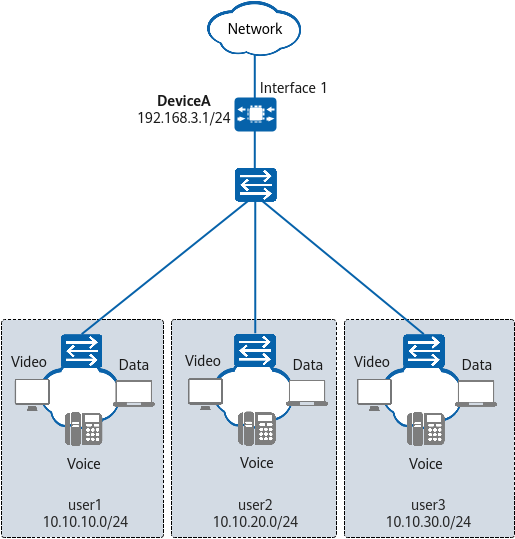

Example for Configuring Queue Scheduling HQoS (Configuring the PIR to Ensure Proper Bandwidth Utilization)
Networking Requirements
In Figure 1, there are three types of users on the network. A minimum assured bandwidth is configured for each user type, and the interface bandwidth needs to be shared to maximize its usage. Traffic from users of type user1 (VIP) must be preferentially transmitted. There are no differentiated services requirements for services. Table 1 lists the configuration requirements for different user types.
User Type |
Scheduling Mode |
Weight |
Assured Bandwidth |
Peak Information Rate (PIR) |
|---|---|---|---|---|
user1 |
PQ |
- |
1600 kbit/s |
10000 kbit/s |
user2 |
WDRR |
6 |
1600 kbit/s |
10000 kbit/s |
user3 |
WDRR |
1 |
4000 kbit/s |
10000 kbit/s |

You can configure the PIR (specified by pir) to properly use the remaining bandwidth. The AR6710-L14T2X4 does not support the configuration of the PIR for users. To implement this function, see Example for Configuring Queue Scheduling HQoS (Configuring a Drop Profile to Ensure Proper Bandwidth Utilization).
In this example, interface 1 represents 10GE 0/0/1.

Configuration Roadmap
The configuration roadmap is as follows:
- Assign an IP address to 10GE 0/0/1 (where HQoS will be applied) on DeviceA.
- Configure an SQ profile on DeviceA and set scheduling and shaping parameters for different users.
- Configure a traffic policy in CBQ mode on DeviceA and reference the SQ profile in a traffic behavior.
- Apply the traffic policy in CBQ mode to the outbound interface 10GE 0/0/1 on DeviceA.
Procedure
- Configure 10GE 0/0/1 on DeviceA.
<HUAWEI> system-view [HUAWEI] sysname DeviceA [DeviceA] interface 10ge 0/0/1 [DeviceA-10GE0/0/1] undo portswitch [DeviceA-10GE0/0/1] ip address 192.168.3.1 24 [DeviceA-10GE0/0/1] quit
- Configure an SQ profile on DeviceA.
[DeviceA] qos-user-profile uq1 [DeviceA-qos-user-profile-uq1] user-queue user1 pq cir 1600 pir 10000 [DeviceA-qos-user-profile-uq1] user-queue user2 drr weight 6 cir 1600 pir 10000 [DeviceA-qos-user-profile-uq1] user-queue user3 drr weight 1 cir 4000 pir 10000 [DeviceA-qos-user-profile-uq1] quit
- Configure an SQ traffic policy on DeviceA.
[DeviceA] acl 3008 [DeviceA-acl4-basic-3008] description Produce_Rate [DeviceA-acl4-basic-3008] rule 0 permit ip source 200.1.62.0 0.0.0.255 [DeviceA-acl4-basic-3008] quit [DeviceA] acl 3009 [DeviceA-acl4-basic-3009] description Video_Rate [DeviceA-acl4-basic-3009] rule 0 permit ip source 107.101.62.0 0.0.0.255 [DeviceA-acl4-basic-3009] quit [DeviceA] acl 3010 [DeviceA-acl4-basic-3010] description OA_Rate [DeviceA-acl4-basic-3010] rule 0 permit ip source 107.201.62.0 0.0.0.255 [DeviceA-acl4-basic-3010] quit [DeviceA] traffic classifier user1 type and [DeviceA-classifier-user1] if-match acl 3008 [DeviceA-classifier-user1] quit [DeviceA] traffic classifier user2 type and [DeviceA-classifier-user2] if-match acl 3010 [DeviceA-classifier-user2] quit [DeviceA] traffic classifier user3 type and [DeviceA-classifier-user3] if-match acl 3009 [DeviceA-classifier-user3] quit [DeviceA] traffic behavior user1 [DeviceA-behavior-user1] qos-user-profile uq1 user-queue user1 [DeviceA-behavior-user1] quit [DeviceA] traffic behavior user2 [DeviceA-behavior-user2] qos-user-profile uq1 user-queue user2 [DeviceA-behavior-user2] quit [DeviceA] traffic behavior user3 [DeviceA-behavior-user3] qos-user-profile uq1 user-queue user3 [DeviceA-behavior-user3] quit [DeviceA] traffic policy user-cbq-policy [DeviceA-trafficpolicy-user-cbq-policy] classifier user1 behavior user1 precedence 5 [DeviceA-trafficpolicy-user-cbq-policy] classifier user2 behavior user2 precedence 10 [DeviceA-trafficpolicy-user-cbq-policy] classifier user3 behavior user3 precedence 15 [DeviceA-trafficpolicy-user-cbq-policy] quit
- Apply the traffic policy in CBQ mode to the outbound interface on DeviceA.
[DeviceA] interface 10ge 0/0/1 [DeviceA-10GE0/0/1] qos queue-scheduling enable //Run this command if the queue capability is disabled on the device interface. [DeviceA-10GE0/0/1] traffic-policy user-cbq-policy outbound [DeviceA-10GE0/0/1] quit
Verifying the Configuration
# Check the configured traffic classifiers.
[DeviceA] display traffic classifier
Traffic Classifier Information:
Classifier: user1
Type: AND
Rule(s):
if-match acl 3008
Classifier: user2
Type: AND
Rule(s):
if-match acl 3010
Classifier: user3
Type: AND
Rule(s):
if-match acl 3009
Total classifier number is 3
# Check the configured traffic behaviors. The command output shows the SQ profiles referenced by the traffic behaviors of different users.
[DeviceA] display traffic behavior
Traffic Behavior Information:
Behavior: user1
User queue:
Qos-user-profile uq1 user-queue user1
Behavior: user2
User queue:
Qos-user-profile uq1 user-queue user2
Behavior: user3
User queue:
Qos-user-profile uq1 user-queue user3
Total behavior number is 3
# Check the configured traffic policy. The command output shows the configured CBQ traffic policy user-cbq-policy.
[DeviceA] display traffic policy
Traffic Policy Information:
Policy: user-cbq-policy
Classifier: user1
Type: AND
Behavior: user1
User queue:
Qos-user-profile uq1 user-queue user1
Classifier: user2
Type: AND
Behavior: user2
User queue:
Qos-user-profile uq1 user-queue user2
Classifier: user3
Type: AND
Behavior: user3
User queue:
Qos-user-profile uq1 user-queue user3
Total policy number is 1
# Check the application records of the traffic policy.
[DeviceA] display traffic-policy applied-record Total records : 1 -------------------------------------------------------------------------------- Policy Type/Name Apply Parameter Slot State -------------------------------------------------------------------------------- user-cbq-policy 10GE0/0/1(OUT) 0 success --------------------------------------------------------------------------------
Configuration Scripts
DeviceA
# sysname DeviceA # qos-user-profile uq1 user-queue user1 pq cir 1600 pir 10000 user-queue user2 drr weight 6 cir 1600 pir 10000 user-queue user3 drr weight 1 cir 4000 pir 10000 # acl number 3008 description Produce_Rate rule 0 permit ip source 200.1.62.0 0.0.0.255 # acl number 3009 description Video_Rate rule 0 permit ip source 107.101.62.0 0.0.0.255 # acl number 3010 description OA_Rate rule 0 permit ip source 107.201.62.0 0.0.0.255 # traffic classifier user1 type and if-match acl 3008 # traffic classifier user2 type and if-match acl 3010 # traffic classifier user3 type and if-match acl 3009 # traffic behavior user1 qos-user-profile uq1 user-queue user1 # traffic behavior user2 qos-user-profile uq1 user-queue user2 # traffic behavior user3 qos-user-profile uq1 user-queue user3 # traffic policy user-cbq-policy classifier user1 behavior user1 precedence 5 classifier user2 behavior user2 precedence 10 classifier user3 behavior user3 precedence 15 # interface 10GE0/0/1 qos queue-scheduling enable ip address 192.168.3.1 255.255.255.0 traffic-policy user-cbq-policy outbound # return